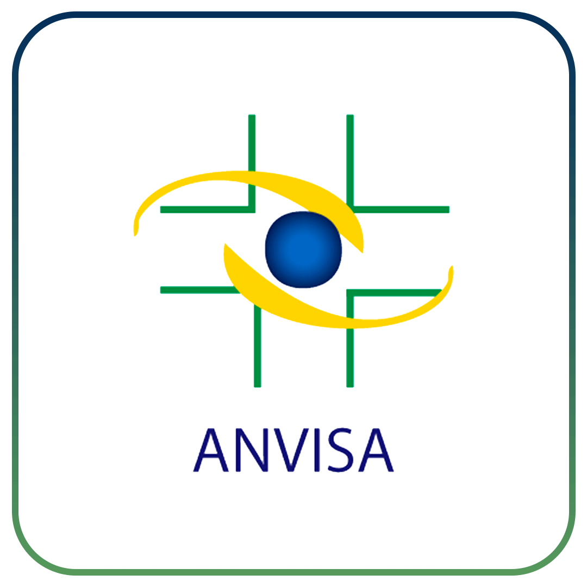
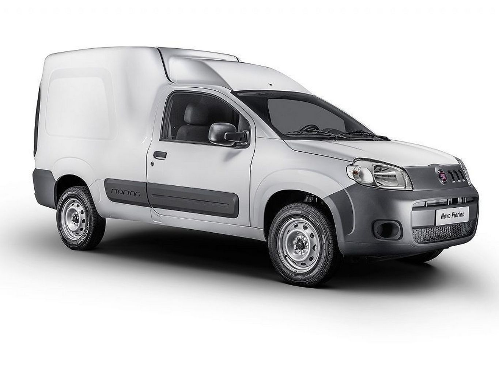

01
Eficiência e agilidade
Não somos apenas uma transportadora. Nossos serviços não param na entrega: entendemos a demanda de cada cliente e desenhamos soluções sob medida para o fluxo do seu negócio.

000%
Logística farmacêutica · São Paulo
Entregas rápidas e confiáveis para o setor de Saúde, Medicamentos, Beleza e Higiene. Transportadora licenciada pela ANVISA, com rastreamento em tempo real e quatro polos operacionais no estado de São Paulo.
01 / 06
Autorizações de funcionamento
Medicamento não é carga comum. Cada autorização abaixo é um portão regulatório que a Way já atravessou — e que define o que podemos carregar para você.
Autorização Especial — Portaria 344
Habilita o transporte de substâncias e medicamentos sujeitos a controle especial.
Medicamentos
Autorização de Funcionamento de Empresa para transporte de medicamentos.
Correlatos
Produtos para saúde: materiais, dispositivos e insumos hospitalares.
Cosméticos
Cosméticos, produtos de higiene pessoal e perfumes.
Licença de Funcionamento
Sistema de Informação da Vigilância Sanitária do Estado de São Paulo.
Farmacêutico responsável
Responsável técnico inscrito no Conselho Regional de Farmácia.

Regulação como vantagem, não como obstáculo. Operar sob fiscalização sanitária significa processo documentado, rastreabilidade e responsabilidade técnica em cada etapa do transporte.
16
Polos operacionais
Hortolândia · Votorantim · Barueri · Praia Grande
4
Licenças e autorizações
AE · AFE ×3 · SIVISA · CRF
100%
Cargas seguradas
Seguro e gerenciamento de risco
5
Regiões atendidas
Campinas · Sorocaba · SP · Baixada · Vale da Ribeira
02 / 06
Por que a Way
01
Não somos apenas uma transportadora. Nossos serviços não param na entrega: entendemos a demanda de cada cliente e desenhamos soluções sob medida para o fluxo do seu negócio.
02
Equipe capacitada e sistema próprio de gestão. Através do nosso portal, o cliente acompanha coletas e entregas em tempo real — sem depender de telefonema para saber onde está a carga.
waysistemalogistico.com.br03
Autorização Especial da Portaria 344, AFE para medicamentos, correlatos e cosméticos, licença SIVISA e farmacêutico responsável inscrito no CRF. Tudo o que uma auditoria pede, pronto.
Ver as credenciais03 / 06
Serviços oferecidos
Frota diversificada de veículos de pequeno, médio e grande porte, equipados com rastreamento e blindagem conforme a necessidade da operação. Todas as cargas são seguradas e gerenciadas.
Abordagem flexível para volumes menores: consolidação inteligente para que até a carga mais compacta chegue com rapidez e segurança.

Prioridade máxima e prazo curto. Equipe dedicada e processos enxutos para quando a falta do produto não é uma opção — reposição hospitalar, ruptura de estoque, emergência.
Veículo exclusivo dimensionado para a sua operação, considerando tipo de carga, volume e distância a percorrer.
04 / 06
Regiões atendidas
Cada polo cobre a sua região metropolitana e alimenta a malha de última milha. As rotas saem de Barueri e distribuem para o interior, a Baixada e o Vale da Ribeira.
Contorno territorial: malha oficial do IBGE — estado de São Paulo
05 / 06
Sistema próprio
O portal Way Sistema Logístico mostra o andamento de coletas e entregas em tempo real. Quem compra transporte para saúde precisa provar onde a carga esteve — e o sistema guarda esse rastro.
Status em tempo real. Coleta, trânsito e entrega atualizados conforme a operação avança.
Comprovante digital. Canhoto e documentação de entrega disponíveis para consulta e auditoria.
Rastro para o compliance. Histórico de ocorrências e prazos, do jeito que a auditoria sanitária pede.
06 / 06
Trabalhe com a gente
Serviços freelancer de coleta e entrega. Se você tem veículo próprio e quer rodar com uma operação licenciada, cadastre-se.
Vamos conversar
Conte o volume, a região e a janela de entrega. Devolvemos uma proposta desenhada para a sua operação.